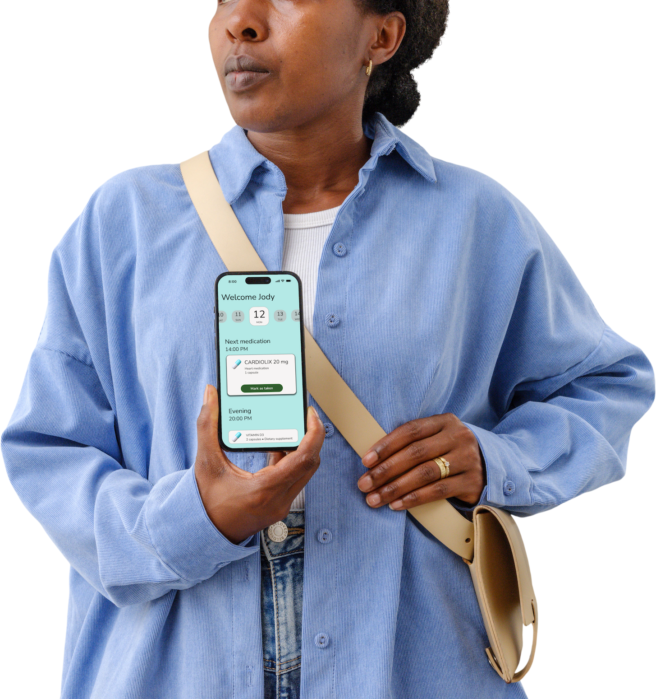
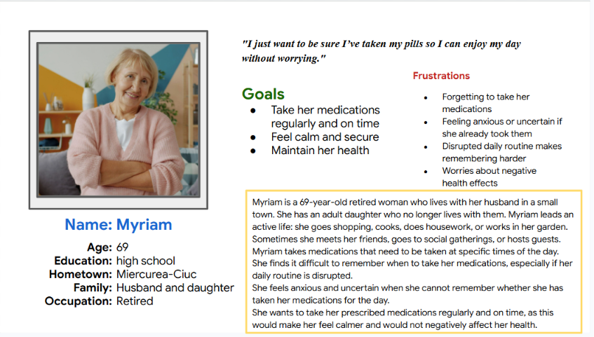
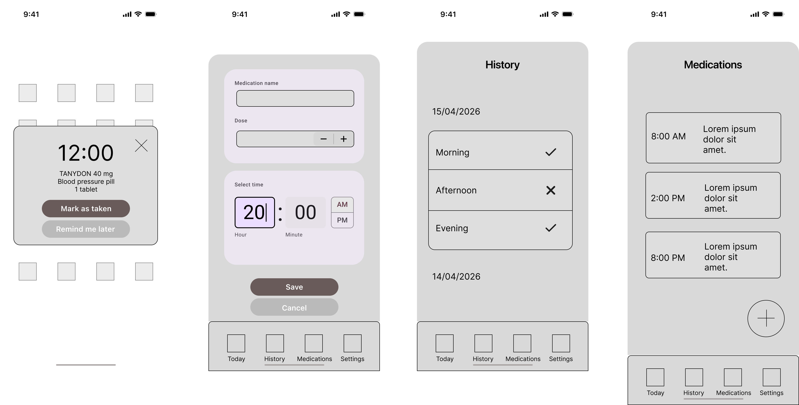
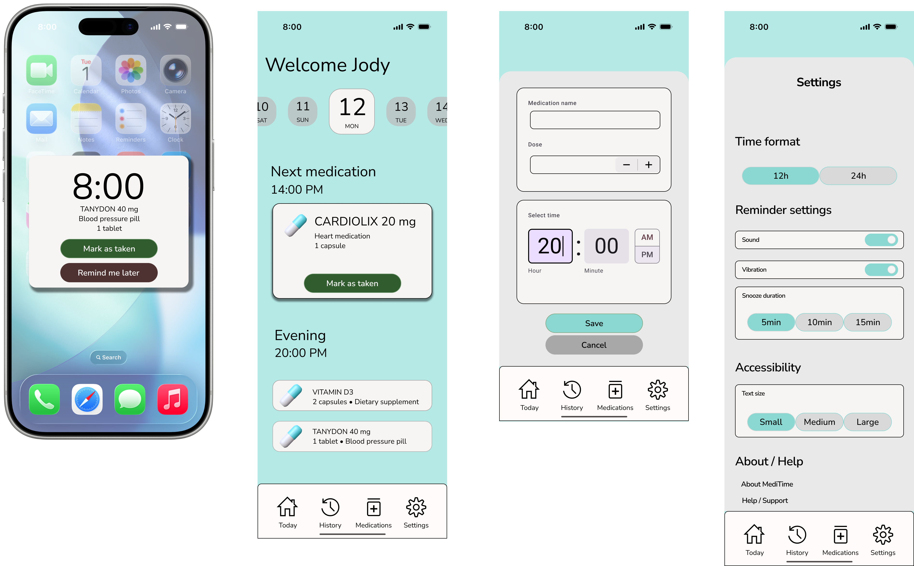

UX/UI CASE STUDY
Supporting medication adherence through a simple and accessible mobile experience.

MediTime is a medication reminder application designed to help users manage daily medications through clear reminders, simple navigation, and accessible design.
Many people struggle to remember medication schedules, especially when taking multiple medications throughout the day. Existing solutions are often cluttered, difficult to navigate, or overwhelming for older users.
User research focused on understanding medication management habits and identifying common pain points. Interviews revealed that users often feel uncertain about whether they have already taken their medication and need a simple way to track daily doses.

Low-fidelity wireframes were created to define the application's structure and user flow. The goal was to reduce complexity and ensure users could quickly add medications, manage reminders, and confirm completed doses.

The final design uses a calm color palette, large touch targets, and clear visual hierarchy. Accessibility considerations influenced typography sizing, contrast choices, and notification design to create a comfortable experience for a wide range of users.

Through this project I gained practical experience in user research, persona creation, wireframing, prototyping, and usability testing. MediTime reinforced the importance of designing simple and accessible solutions for everyday healthcare needs.